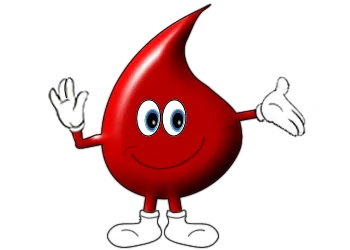
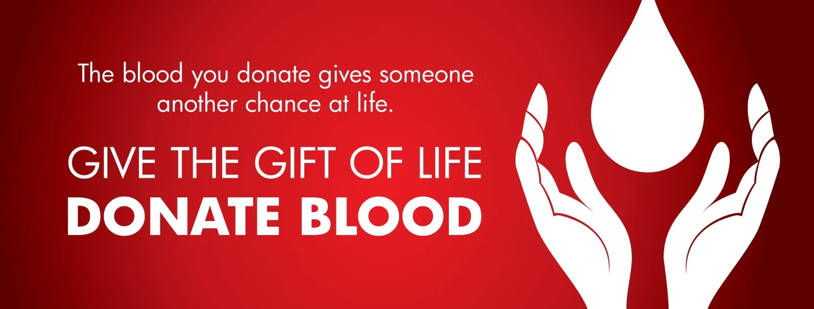
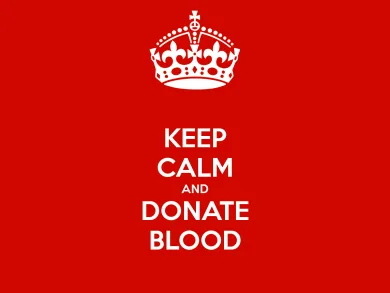
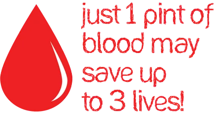
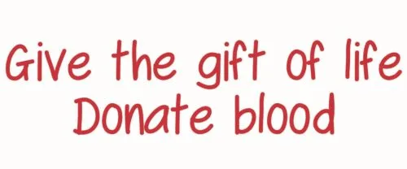
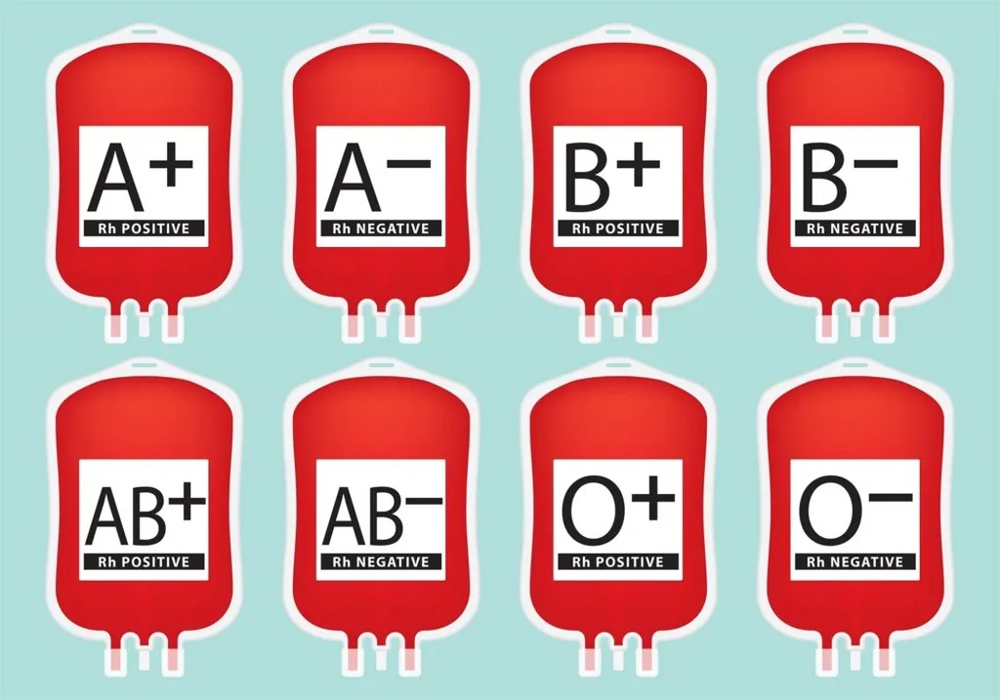
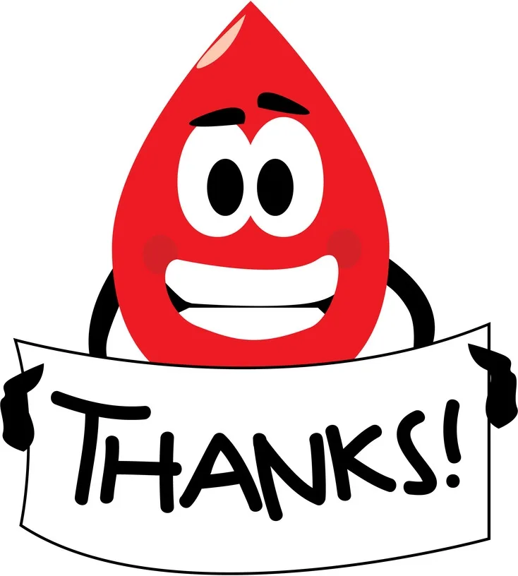

Red Cross Blood Bank Chiang Mai
You can help save lives!
The Red Cross Blood Bank Donation Center in the Old City is open EVERY DAY for receiving your donation.

If you have an hour spare over the next few weeks, we would welcome you to make a simple donation to the help save lives. With Songkran coming up and the blood bank closed 13th-15th April for Songkran, blood is needed now as Songkran is a dangerous time for motor accidents and increased need for blood.
*** Chiang Mai’s main Red Cross Blood Donation Centre is now accepting donors from the United Kingdom, France and Ireland. No more variant Creutzfeldt-Jakob disease “mad cow disease ” restrictions.
Mobile units, unless specifically requested, are not accepting the donors!
Feel free to like us also - https://www.facebook.com/ChiangMaiBloodBank ! You will get up to date information regarding Blood Bank’s Services and donation locations.
Why Donate Blood
It’s the quickest and easiest way to save someone’s life - We all want to make a difference, but many of us don’t feel we have the time to. Donating blood is a quick and easy way to impact someone’s life. The process only takes up a mere hour of you day, and your donation can save up to three lives.
Someone we know will require a blood donation - Blood donations are actually more common than most of us think. Someone in your family will probably need a blood transfusion in their lifetime. However at the moment, only one in 25 people donate blood.


Most blood donations go towards treating people with serious illnesses - It’s safe to argue that many people believe that most blood donations go towards surgical patients. However, more than a third of blood donations go towards treating people with cancer and blood diseases such as leukemia, aplastic anemia and lymphoma.
Other types of people that blood donations help include surgical patients, heart, stomach and kidney disease sufferers, orthopaedic patients, pregnant women, new mothers, young children and trauma patients.
It’s good for your health - Whilst taking 10% of your blood may sound daunting, donating blood actually has many health benefits. It reduces the risk of heart disease, liver, lung, colon stomach and throat cancers. It also enables your body to replenish blood, which helps the body stay healthy, function better and work productively.
It’s so easy, pain free process - Do you enjoy laying down and doing nothing? Donating blood is basically procrastinating for a cause. All you have to do is turn up to the blood donation center, get a quick health check and chill out for an hour- the trained nurses do the rest. They even have some snacks and drinks for you after your donation!
Criteria For Donating Blood
Before coming to the Red Cross Blood Bank Chiang Mai or your local temporary Blood Donation Centre please read these criteria and don’t waste your trip.
▪ Donor must weigh over 45 kg and be in good physical condition.
▪ Age between 17- 70 years old and before your 60th birthday. If 17 years old, must have consent from parent or guardian. If Over 55 please read SPECIAL NOTES BELOW***!
▪ Must be well rested the night before donation.
▪ Must not have any symptoms of fever, upset stomach or diarrhea within the past 7 days.
▪ Women must not be menstruating or breast feeding, or have miscarried within the last 6 months.
▪ Must not have had drastic unexplained weight loss within the last 3 months.
▪ If donor has taken aspirin, painkillers or muscle relaxing medication, must wait 3 days before donating. If donor is taking antibiotics, must wait 7 days before donating.
▪ Donor must not have any pre-existing conditions, such as diabetes, high blood pressure, cancer, thyroid conditions, anemia, etc.
▪ Donor must not have had a major surgery less than 6 months before donating, or less than 1 month for small surgery.
▪ Donor must not have engaged in risky sexual behavior or have a history of drug abuse.
▪ Must not have had a tattoo or a blood transfusion within the last year.
▪ If donor has had malaria, must have recovered for at least 3 years. If donor has been in an area where malaria is prevalent, must have been more than 1 year ago.
▪ Has not received any vaccinations within the last 14 days.
▪ Donors should eat an good meal before donating but should not consumer foods high in fat and cholesterol.
For more detailed Blood Donation Donor Eligibility Requirements

***SPECIAL NOTE:
First time donors must not be over 60 years old. For regular donors 65-70 years old:
a.) Must be a regular donor when they were 55-65 years old. At least once per year.
b.) Regular donor means someone who has donated blood not more than twice per year, or once every 6 months.
c.) CBC screening every time before donation. CBC test with no charge can be done at the Red Cross Blood Bank Chiang Mai.
d.) BC,SF, and EKG screening at least once a year.

e.) Must have medical certification.
BC is Blood Chemistry (Biochemistry) which including of Glucose, Blood Urea Nitrogen, Creatinine, Cholesterol, HDL-Cholesterol, LDL-Cholesterol, Triglyceride, Uric Acid, Total Protein, Albumin, Billirubin, Electrolyte, AST (SGOT), ALT (SGOT), etc. SF is Serum Ferritin. Donors age 65-70 should bring recent test results, plus EKG report and medical certification with them when making the donation.
Address and Directions
Questions please call 053 418 389 Ext 17, Hotline 082-1950044
More explanation and information about the blood donation procedure can be found at the Red Cross Page.
If you are ready to donate, just head over to the Red Cross Blood Bank Chiang Mai and you can follow the simple blood donation procedure!
